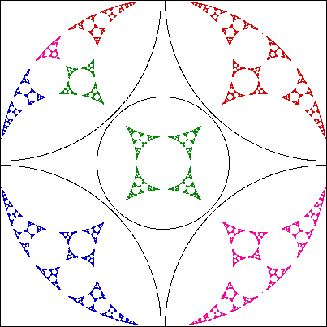

With four circles arranged as in the previous example, and a fifth in the middle, the limit set is much richer.
Here is a picture when the inverting circles are disjoint.
To give a larger picture of the limit set, only one quarter of the four larger inverting circles is shown.
The colors correspond to how parts of the limit set outside the upper left circle invert to parts inside that cirlce.
|  |
The limit set when the circles become tangent is described where we discuss Mandelbrot's algorithm for generating some limit sets.
Return to Limit Sets and Inversion.